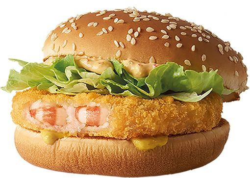
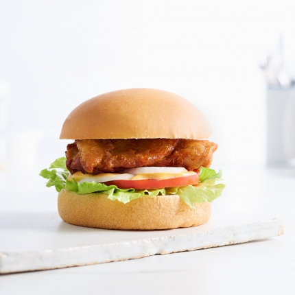
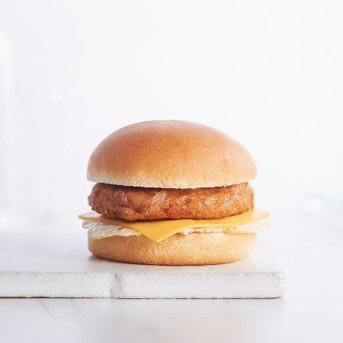
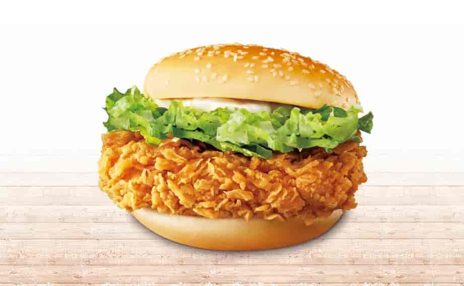
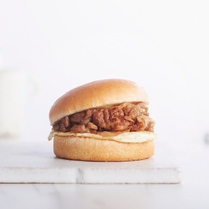
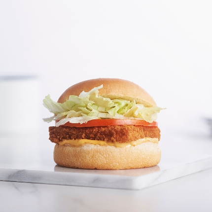
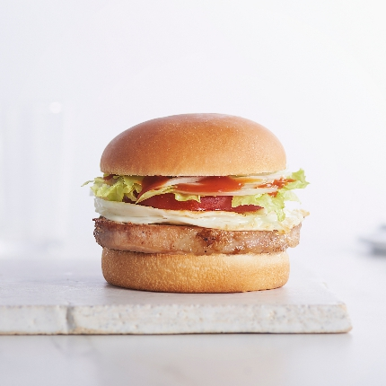
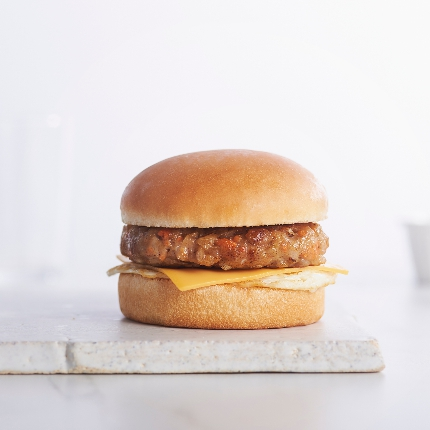
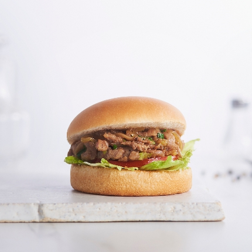

黃金蝦餅堡
黃金蝦餅堡可能是一種包含黃金蝦餅（可能是由蝦肉製成的餅）的漢堡，但具體的配料和調味方式可能因製作者而異。

雞腿排堡
以炸雞腿排為主，可能搭配蔬菜和不同的醬料。

紐奧良辣雞堡
受到紐奧良風味的啟發，可能含有辣味調味料和香料，搭配辣雞肉。

卡啦辣雞腿堡
可能有卡啦辣調味，提供濃郁的辣味體驗，以炸雞腿為主。

日式燒肉蛋堡
日式風味，可能包含燒肉和煎蛋，搭配日式醬汁。

阿拉斯加鱈魚堡
包含阿拉斯加鱈魚，可能有魚汁或特殊的魚類調味。

里肌豬排堡
以里肌豬排為主，可能搭配新鮮蔬菜和不同的醬汁。

黃金蝦餅堡
黃金蝦餅堡可能是一種包含黃金蝦餅（可能是由蝦肉製成的餅）的漢堡，但具體的配料和調味方式可能因製作者而異。

鮮嫩豬柳堡
強調豬柳的鮮嫩口感，可能搭配特製醬料和蔬菜。

招牌豬肉堡
豬肉堡的主要成分是豬肉，可能是煎炸、烤烤或燒烤的方式烹製，以增添豬肉的風味。